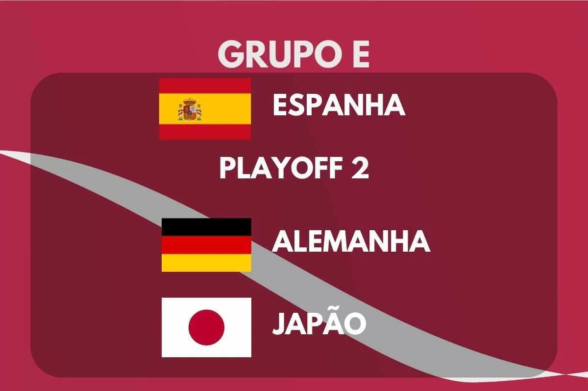

DESCRIÇÃO DO GRUPO
O Grupo E da Copa do Mundo FIFA 2022 terá sua primeira fase de jogos de 23 de novembro a 1º de dezembro de 2022. O grupo é formado pela Espanha, os vencedores da CONCACAF-OFC, Alemanha e Japão. As duas melhores equipes avançam para as oitavas de final.
|  | Encontros anteriores em Copas do Mundo | |
| Espanha x CONCACAF-OFC | Adversário ainda não definido | |
| Alemanha x Japão | Nenhum encontro | |
| Espanha x Alemanha | 1966, fase de grupos: Alemanha 2-1 Espanha 1982, fase de grupos: Alemanha 2-1 Espanha 1994, fase de grupos: Alemanha 1-1 Espanha 2010, semifinal: Alemanha 0-1 Espanha |
|
| Japão x CONCACAF/OFC | Adversário ainda não definido | |
| Japão x Espanha | Nenhum encontro | |
| CONCACAF/OFC x Alemanha | Adversário ainda não definido | |
EQUIPES
| Equipe | Inscrição | Confederação | Método de Qualificação | Data de Qualificação | Aparições em Copas do Mundo | Última Participação | Melhor Resultado | Ranking FIFA (Março/2022) |
| Espanha | E1 (Cabeça-de-chave) |
UEFA | Vencedor do grupo B | 14 de novembro de 2021 | 16 | 2018 | Campeão (2010) | 7º |
| Costa Rica x Nova Zelândia | E2 | CONCACAF ou OFC | Vencedor da repescagem intercontinental | 14 de junho de 2022 | - | - | - | - |
| Alemanha | E3 | UEFA | Vencedor do grupo J | 11 de outubro de 2021 | 20 | 2018 | Campeão (1954, 1974, 1990 e 2014) | 12º |
| Japão | E4 | AFC | 2º colocado do grupo B | 24 de março de 2022 | 7 | 2018 | Oitavas de final (2002, 2010, 2018) | 28º |
PARTIDAS
Todas as partidas seguem o fuso horário UTC+3 (Horário de Moscow).
Alemanha x Japão
| Data/Hora | Local |
| 23 de Novembro às 16:00 | Estádio Internacional Khalifa, Doha |
Espanha x CONCACAF–OFC
| Data/Hora | Local |
| 23 de Novembro às 19:00 | Estádio Al Thumama, Doha |
Japão x CONCACAF–OFC
| Data/Hora | Local |
| 27 de Novembro às 13:00 | Estádio Ahmed bin Ali, Al Rayyan |
Espanha x Alemanha
| Data/Hora | Local |
| 27 de Novembro às 22:00 | Estádio Al Bayt, Al Khor |
CONCACAF–OFC x Alemanha
| Data/Hora | Local |
| 01 de Dezembro às 22:00 | Estádio Al Bayt, Al Khor |
Japão x Espanha
| Data/Hora | Local |
| 01 de Dezembro às 22:00 | Estádio Internacional Khalifa, Doha |
CLASSIFICAÇÃO
| 1º Colocado | 2º Colocado |
| Enfrenta o 2º Colocado do Grupo F, nas Oitavas de Final | Enfrenta o 1º Colocado do Grupo F, nas Oitavas de Final |